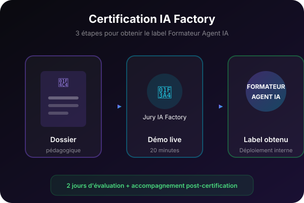

Certification IA Factory — Formateur Agent IA
Validez votre niveau et obtenez un label crédible. Évaluation pratique, dossier pédagogique et jury. Pour ceux qui veulent structurer une offre professionnelle ou déployer une certification en interne.

Pour qui ?
- Formateurs qui veulent un label crédible
- Consultants qui déploient une offre structurée
- Responsables formation qui certifient des équipes internes
Outils abordés
- ChatGPT
- Claude
- Make
- n8n
Prérequis
Avoir suivi F1, F2 et F3 ou avoir une pratique avérée de formateur IA
Ce que vous apprendrez
Étape 1 — Dossier pédagogique
Construire et soumettre un dossier de formation complet autour d'un agent IA.
Étape 2 — Évaluation pratique
Animer une démonstration live devant le jury IA Factory.
Étape 3 — Certification et déploiement
Obtenir le label et structurer une offre récurrente ou interne.
Programme détaillé
1Étape 1 — Dossier pédagogique
1.1 Fiche d'identité de la formation
Définir public, promesse, objectifs et format.
1.2 Plan détaillé 3×3
Structurer 3 modules de 3 leçons avec démonstrations.
1.3 Supports et évaluation
Joindre workbook, slides et grille d'évaluation.
2Étape 2 — Évaluation pratique
2.1 Démonstration live
Animer 20 min de formation autour d'un agent IA.
2.2 Questions du jury
Répondre aux questions pédagogiques et techniques.
2.3 Feedback et axes de progrès
Recevoir une évaluation structurée et un plan d'amélioration.
3Étape 3 — Certification et déploiement
3.1 Obtention du label
Recevoir le badge et les supports de communication.
3.2 Structurer une offre récurrente
Transformer la certification en programme sur 6 mois.
3.3 Déployer en interne
Adapter le dispositif pour une certification d'entreprise.
Bénéfices concrets
Le label IA Factory Formateur Agent IA
Un dossier pédagogique validé par un jury
Une offre structurée pour vendre ou déployer en interne
Passez au niveau supérieur pour accéder à cette formation
Cette formation est incluse dans l'offre Entreprise. Rejoignez-la pour accéder au contenu complet, aux templates et aux exercices pratiques.